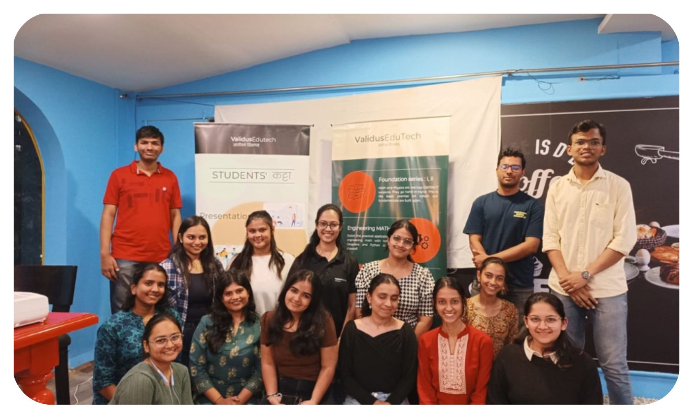
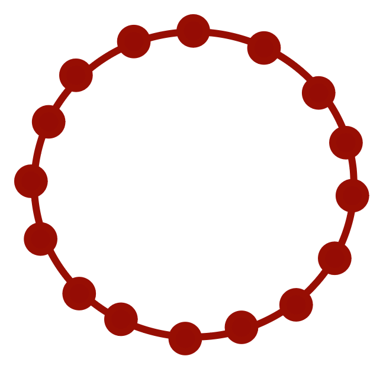

Students' Katta signifies a relaxed, interactive, learning zone where students engage in discussions, problem solving, and peer-to-peer learning, fostering creativity and collaboration outside of a formal classroom setting. It promotes an open exchange of ideas and builds a sense of community among students.
Events
Name of latest event
Logistics of latest event
Theme of latest event
#9 Coffee Meet Up
Let's chat...:)
On the tranquil evening of April 3rd 2024, Waari Book Cafe hummed with youthful energy as ValidusEduTech histed a special event dubbed 'Coffee Meet'.
This gathering wasn't just about unwinding after the 10th board exams, it was a chance for students to pause, reflect, and celebrate their achievements before embarking on their next journey.
#8 Sound Mind in Sound Body
In a lively blend of education, wellness, and sustainability, Validus EduTech recently led an inspiring event at BNCA, echoing the mantra of "A Healthy Mind in a Healthy Body." Amidst the vibrant atmosphere of this prestiguous architectural college, the event shed light on a holistic approach to student growth, shining a spotlight in NOWFIT, an innovative sports company.
#7 Sound Mind in Sound Body

ValidusEduTech organized a successful event under its #Students' Katta in its 7th session on Saturday 20th January.
Young achievers and tomorrow's Global Leaders from Universities in Pune attended the session with enthusiasm.
#6 Global Citizens
In its 6th Edition, ValidusEduTech hosted 21 young minds from Pune for an evening of discussions and learnings.
Networking, travel, tasting international cuisines and making friends across the border are just a few of the experiences you'll receive if you step out of the four walls of your comfort zone in the house.
#5 C++ : Communication and Conversation
In a lively blend of education, wellness, and sustainability, Validus EduTech recently led an inspiring event at BNCA, echoing the mantra of "A Healthy Mind in a Healthy Body." Amidst the vibrant atmosphere of this prestiguous architectural college, the event shed light on a holistic approach to student growth, shining a spotlight in NOWFIT, an innovative sports company.
#4 Personality Kaleidoscope
#3 Katta Stories
#2
#1
Connect
Networking is what we feel is essential in our life. Knowing a person and being able to connect
with him or her is a necessity. Connections help us progress and build personality. Primary step to
get into something is to build a strong network and connections! Let them be meaningful too!

Collaborate
Once you are connected with people, to create something you need to collaborate with them.
Collaborations bring sharing of ideas, thoughts, getting out something constructive!
Create
Final step is to create something and showcase your work in front of people! Presentations about
any topic which is not related to study is what we aim for. We also inculcate Katta Stories in
which students share their own experiences about life incidences and share their own views to others!